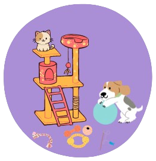

Información para adopciones y convivencia responsable
Alimentación
La alimentación de nuestras mascotas es uno de los pilares en la vida y salud de ellos. Por eso es importante que te contactes con tu veterinario de confianza para que te oriente correspondientemente. Pero acá te dejamos algunas cosas a tener en cuenta. La edad es uno de los factores, ya que la alimentación varia si es cachorro, adulto o geronte. La calidad del alimento, sabemos que hay varias marcas y que es dificil elegir, principalmente por los costos de la misma, pero es fundamental que no compres alimentos que se venden en supermercados y que si podes le compres la calidad maxima que puedas. También recorda no comprar bolsones enormes hasta que no sepas si a tu mascota le gusta. La cantidad también es un factor importante, consulta con tu veterinario o en los packs de los alimentos dice la cantidad de gramos que corresponde por peso. Siempre tiene que tener agua a su alcance No darle comida de humano o sobras, salvo que el veterinario lo recomiende. Recorda que el estomago de nuestras mascostas no es como el nuestro y podemos dañar su salud.
Juegos
Nuestros compañeros necesitan jugar y estimularse todos los días. Para ello dependiendo el tipo de mascota que tengas, vas a tener que dedicarle tiempo. Para eso es importantes que pruebes con distintos juegos y elementos, ya que no todos son iguales y tienen diferentes gustos. Es importante que tengan a su alcance sus "chiches", ya que si se aburren pueden empezar a romper y traer problemas en la convivencia. En el caso de los perros es importante el paseo y la relación con otros de su especie. En caso de tener alguna situación con alguna de tus mascotas, no te desesperes, podes contactar a adiestradores, ellos están para ayudarlos.
Salud
La salud de nuestros compañeros tiene que ser nuestra prioridad, por eso es muy importante tener un veterinario de confianza. Trata de buscar por tu barrio un veterinario con buenas recomendaciones, seguir el plan de vacunación y hacerle los chequeos que correspondan. También te aconsejamos tener en tu celular, y en algún lugar de la casa telefonos de veterinarias 24hs, ya que esto te va a facilitar en caso de una emergencia. Recorda no darle medicamentos de humanos a las mascotas, salvo que sea indicado por un profesional.